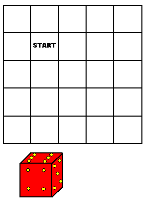

 |
Suppose you placed a die on the square marked START in the board at the left, and you position the die so the 6 is on top and the 4 faces you. From that position you could roll the die two squares right, two squares down, two squares left, then two squares up, and the die will be back in its original position: the 6 is on top and the 4 faces you. You could also roll around a more complicated pattern and come back with the 6 on top and the 3 facing you (imagine that the board extends indefinitely in all directions, so you can roll around in very complicated patterns). Or you can roll around other patterns and come back with any other number on top. What you CAN NOT DO, no matter where you roll, is come back to the starting square with the 6 on top and the 5 facing you. You also can’t get the 6 on top and the 2 facing you. Next, suppose you begin with your starting position, roll around a complex pattern, and then end on the square that is immediately to the right of START. It is possible to end on that square with the 6 on top and the 5 facing you, or you could end with the 6 on top and the 2 facing you; however, you CAN NOT end with the 6 on top and the 4 or 3 facing you. In general, on any square of this board there are 12 positions of the die that are possible and 12 positions that are impossible. Also, what is possible in a square is impossible in its immediate neighbor, and what is impossible in the square, is possible in its immediate neighbor.
|
|
I had run across these restrictions when I was designing rolling cube mazes. I explained them as “something weird is happening with parity.” That made sense to me because parity pops up in other puzzles, especially puzzles about tiling a surface. And actually “something weird with parity” is the best explanation I can come up with for this phenomenon. On Rolling Cube Puzzles discusses the parity property of cube mazes and mentions that, because it reduces the possible positions of a cube, it also reduces the computational complexity of analyzing the mazes. Kevin Buchin and I had an e-mail discussion about parity, and we considered a way that a maze could overcome the parity restriction. He took this idea and created his maze. The main feature of the maze is that if you travel across the row at the top, or the row at the bottom, you will change the parity of the die. I’ll leave it to you to figure out why this happens. Once you change the parity, there are places you can go that you couldn’t go to before. The central area of this maze has a denser set of paths than in other rolling cube mazes. What I wonder is: could you overcome the parity restrictions in other types of puzzles? I don’t really know. Here is an overview of the solution to the maze: The true path first goes to the large square at the upper right and then left across the top row. It is now in the changed parity state. Next it travels around the central portion of the maze, going over the Start square, going around a tricky loop, and ending up on the large square at the lower right. It then goes across the lower row and is back to the original parity state. Next it goes up to the large square at the upper left, then goes right across the top row, and it is now back in the changed parity state. It is now a short trip to the Goal. |